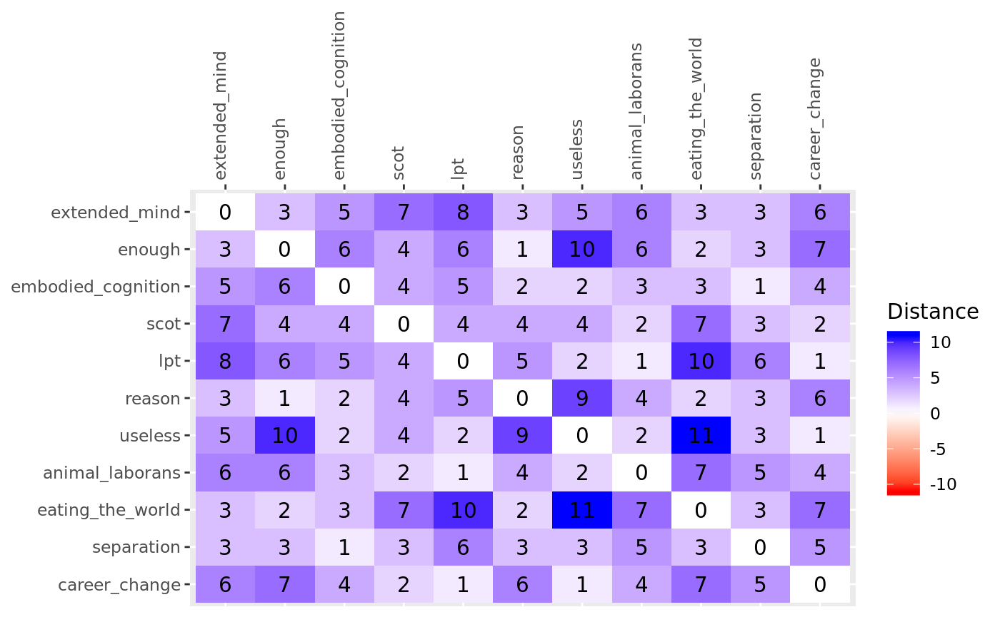
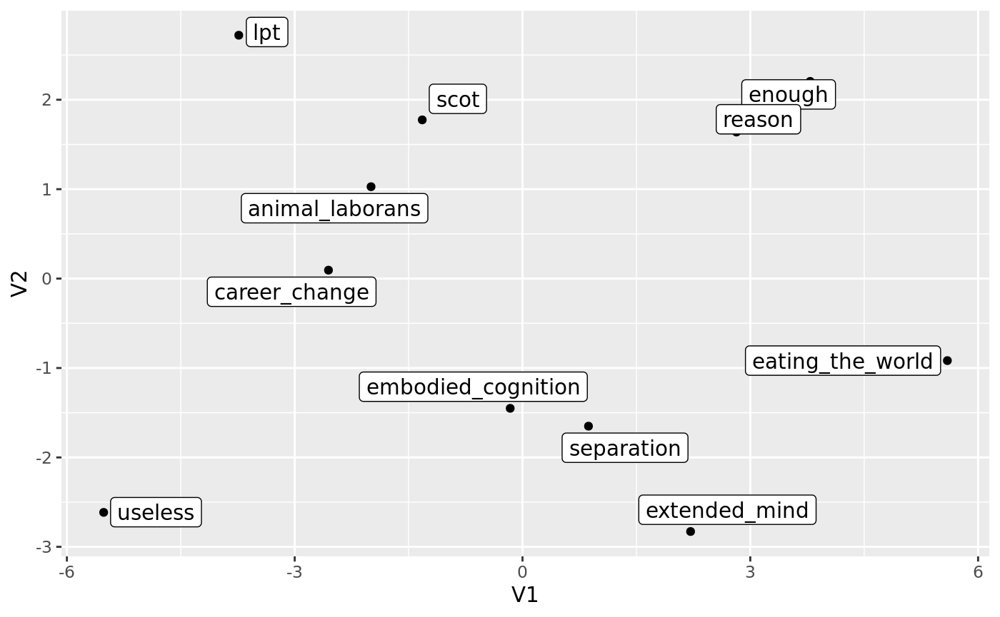

The goal here is to choose, and if necessary, develop a methodology to measure human subjectivity which combines the following criteria:
Participants should assess items relative to one another, not on some absolute standard (= normative measurement). This makes measurements comparable between individuals, because they all used the same standard, namely, all other items. Ipsative measurement violates the independency of item measurements, but allows q-ways analysis of results. Additionally, ipsative measurement may be a more plausible operationalisation of human choice.
It should be noted that a ranking is always an ipsative measure, but not all ipsative measures need to be ordinal.
Studying human subjectivity requires an exploratory design. There can be no hypothetico-deductive assumptions baked into the items, or causal mechanisms sought in the analysis, both of which would necessarily curtail the free expression of human subjectivity.
While individual items may express particular theories, the total sample of items should be widely diverse and serve to maximize the expression of participants.
Likewise, any statistical analysis will be strictly concerned with detecting, summarising and visualizing patterns in the data.
Participants will find individual items to be frustratringly crude or muddled tools to express their subjectivity. This is a matter of neccessity, caused by the inherent polysemy of human speech: individual utterances, or items, always imply context or beget clarification, neither of which a static item can offer.
Items are always ambiguous. Methods for operant subjectivity do not differ much from traditional survey research in this regard; they just take this problem more seriously. Instead of trying to narrow down the meaning of items, or triangulating around a hypothetico-deductive concept, operant methodologies give items some context, by relying on all other items.
Analysis and interpretation of operant subjectivity must therefore always be holistic: it is never the position of an individual item that matters, but the shared pattern across all items.
Q methodology has been the founding implementation of measuring operant subjectivity. Unfortunately, this traditional approach faces some severe limitations:
The physical sorting procedure of cards is hard translate to digital interfaces. When many items or small screens are used, legibility suffers and the assumption of an ipsative comparison of all items against all items becomes increasingly implausible. Evidence also suggests that participants also Q-sort more hastily when using computer interfaces. Participants also appear to find digital sorting much less enjoyable.
These constraints greatly simplify the sorting procedure and any downstream analysis, but there appear to be no reasons to assume that these are ontologically or epistemologically justified. Quite the opposite, evidence of vNM-deformant preferences abound, and the very dimensionality of individual subjectivity is a worthwhile empirical question.
This problem is exacerbated whenever screen real estate or completion time further constrain the item count. Partial sorts with NA are generally not possible in Q methodology because they would violate the ipsativity of measurements.
We here suggest pairwise comparisons of all possible item combinations (in short, pairwise) as a procedure to alleviate these shortcomings:
However, the procedure remains highly time-intensive and potentially unpalatable for participants when all item combinations are assessed. We therefore suggest an implementation that works with (many) NA values from partial comparisons.
We fielded the pairwise procedure in an initial alpha test to assess three basic premises of the method:
The alpha test was conducted with roughly 40 experts in industrial relations, using a subset of 11 items from the denkzeug study. 16 experts and two researchers completed the assessment.
To simplify the initial analysis, participants assessed all 55 combinations of the 11 chosen items, though this is not intendended in the final implementation.
The test relied on a rudimentary web interface, where participants could choose one of the two presented items or express indifference. In addition to just choosing a winning item, participants were also encouraged to award integer points to the winning item to express a magnitude of the perceived difference between the items. The web interface displayed the average perceived difference of a users past assessments, and participants were encouraged tp keep their average differences around 4, thus enforcing something akin to a constant-sum budget of differences and strengthening ipsativity.
In addition, the interface provided a progress indicator and allowed users to enter open-ended feedback for any given item pair (few did).
The overall response from users was quite critical, though given the limited time, a surprising number of users (16) completed the test, and there was also isolated enthusiastic feedback.
Some of the criticism may have stemmed from the research context in which the alpha test was fielded. We ran the test as part of a progress report presentation on an ongoing research project concerning wearable computing in manufacturing and logistics, and many participants expected to hear about that subject matter or where skeptical of the suitability of this research method.
However, much of the criticism must be taken at face value.
The assessments, true to the condition of instruction, are stored as distances between the items in an \(J \times J \times K\) array \(\underline{X}\) of order
\[items \times items \times people\]
. By convention, the item presented first gives the row \(J_r\), and the item presented second gives the column \(J_c\), and the slice index \(K_p\) gives the person. The cells in the upper diagonal of every slice are the assessments as given by the participants. For example, if a user prefers the first item by a distance of 3, then cell \(X_{rcp}\) has the value 3. The equivalent cell in the lower diagonal \(X_{crp}\) receives the value -3. When a participant is indifferent, both cells receive the value 0. Item pairs that have not been assessed are all NA.
The diagonal is all 0s, because supposedly any participant would be indifferent between an item and the same item.
Before considering the array of all assessments by all participants, we begin by describing and analysing the pairwise data of the one participant we know best – the author(s). Face validity of the procedure, as well as intelligility of results should be easiest to test here, because know what an appropriate representation of our subjectivity might be. Of course, we might be biased observers and our judgement can only be a necessary condition for the usefulness of the method.
The below figure gives the absolute distance matrix. The directions of differences are here omitted, because they do not matter for the downstream analysis; distances are always non-negative.1 The signs of the distances will only serve again later for correct rotation.
library(pensieve)
slice <- abs(hbs_alpha[,,"Max"])
pensieve:::plot_heatmap(
color_matrix = slice,
color_title = "Distance",
limits = NULL
)
The full distance matrix plotted as a heatmap in the above is not very informative. Any potential patterns cannot be easily discerned from the distance matrix. The distance matrix, while efficient for recording n-dimensional spaces, is not suitable for human visual perception. We are used to (euclidian) coordinate systems, not distances.
In addition, for the assessments of even one participant to be meaningful, if there are patterns, we need to reduce the dimensionality to the largest, most salient dimensions to make sense of the data.
A multi-dimensional scaling (MDS) accomplishes both these goals.
res <- cmdscale(d = slice, k = 3, eig = TRUE, x.ret = TRUE)
res$points[, 1] <- res$points[, 1] * -1
res$points[, 2] <- res$points[, 2] * -1
df <- as.data.frame(res$points)
library(ggplot2)
g <- ggplot(
data = df,
mapping = aes(x = V1, y = V2, label = rownames(df))
) +
geom_point() +
ggrepel::geom_label_repel()
g